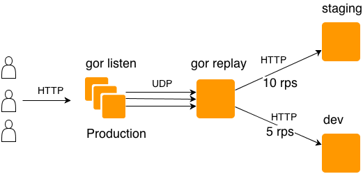

replicar tráfico de producción a ambientes de test con GOR
http://leonsbox.com/blog/2013/06/04/improving-testing-by-using-real-traffic-from-production/
GOR parece ser una solución muy buena para realizar test de "stress". Apenas lo pruebe comento qué tal funcionó :)

Comments
Comments powered by Disqus